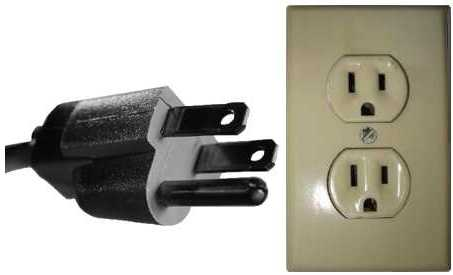
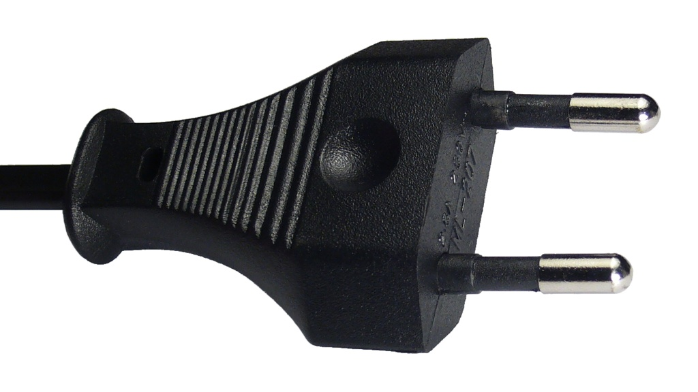
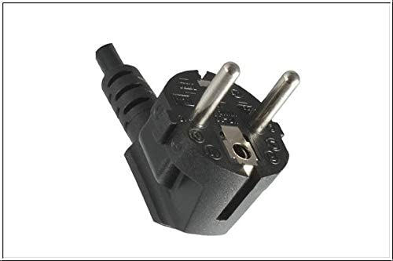

Über Den
SCHUKO Stecker
Stecker in verschiedenen LÄNDERN
STECKER-Typ A
STECKER-Typ B
EUROSTECKER
STECKER-Typ C
STECKER-Typ D

STECKER-Typ E
SCHUKOSTECKER
STECKER-Typ G
STECKER-Typ H
STECKER-Typ I
STECKER-Typ J
STECKER-Typ K

STECKER-Typ L

STECKER-Typ M
Über den SCHUKO Stecker
"Schuko" ist ein Akronym für Schutzkontakt. Der Schukostecker wird hauptsächlich in Europa verwendet. 1939 meldete Albert Büttner das Patent für den Schuko Stecker an.
Folgende Normen gibt es beim Schukostecker:
- DIN 49440
- DIN 49441
- DIN VDE 0620: 2021-02
- IEC/TR 60083
- CEE 7/4
- CEE 7/5
- CEE 7/7
- CEE 7/16
- CEE 7/17
Aufbau des Schukosteckers:
Der Schukostecker hat zwei Kontaktstifte - einen Außenleiter und einen Neutralleiter. Der dritte Kontakt, der Schutzkontakt (die beiden Kontakte an der Seite der Steckdose) soll Fehlerströme ableiten um gröbere Stromunfälle zu vermeiden. Daher besteht beim Einstecken erst mit dem Schutzleiter und dann mit Außen und Neutralleiter konakt. (deshalb ist der Eurostecker nur für kleinere Stromstärken zu verwenden)